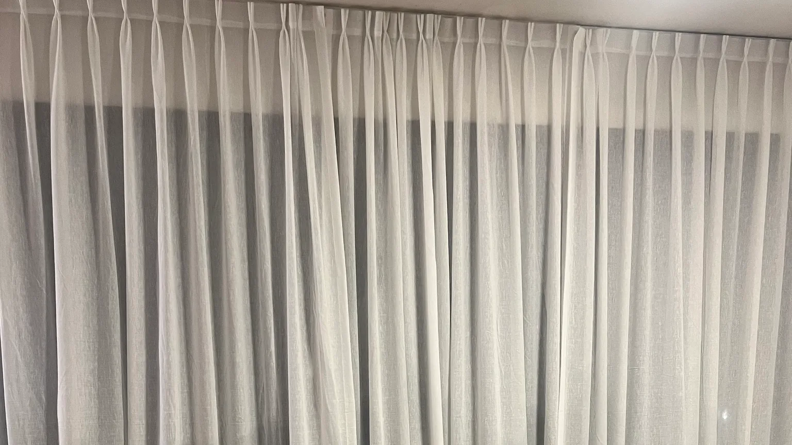
Cada ventana, con la tela justa.
Cortinas de tela, romanas, paneles orientales y doble cortinado. Asesoramiento con muestrario en tu casa, medición e instalación.
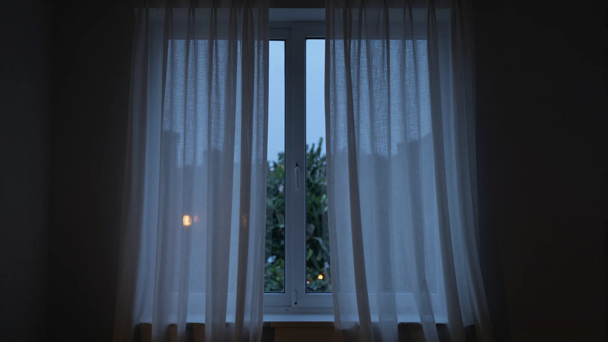
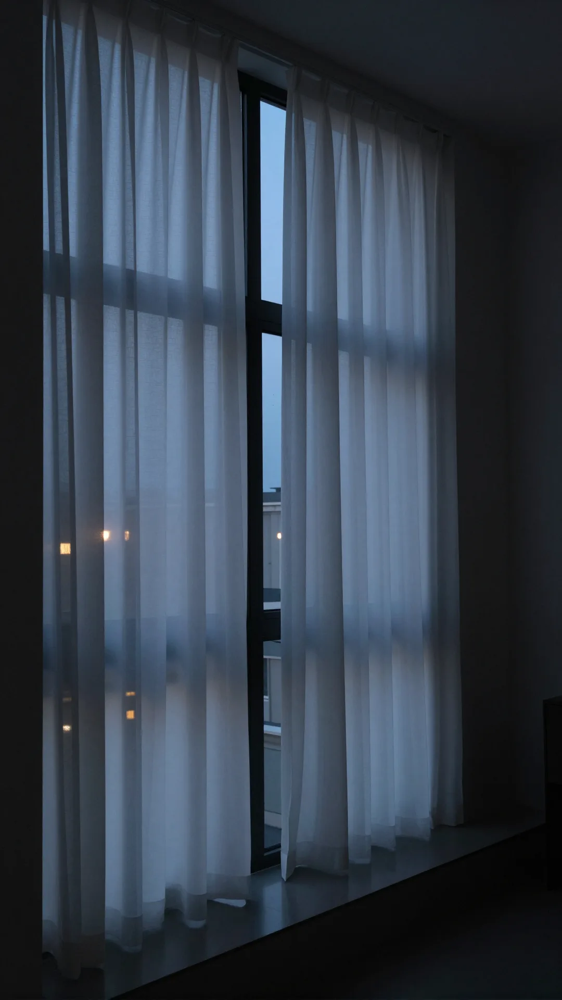
Una ventana cambia tres veces por día.
Temprano pide luz,
al mediodía, sombra,
de noche, reparo.
Elegimos la tela para las tres.
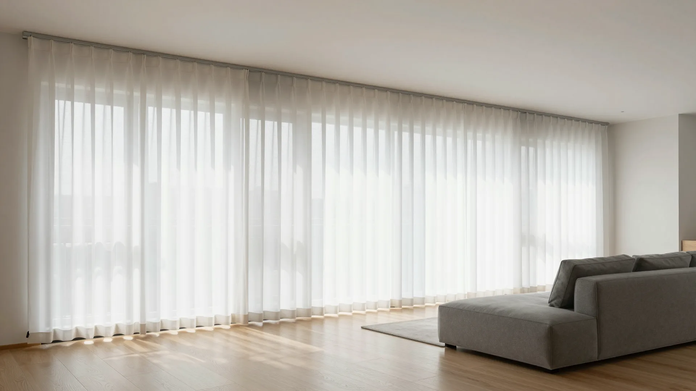
Cortinas de tela
De pared a pared, romanas y paneles orientales, en gasa, tusor o voile.
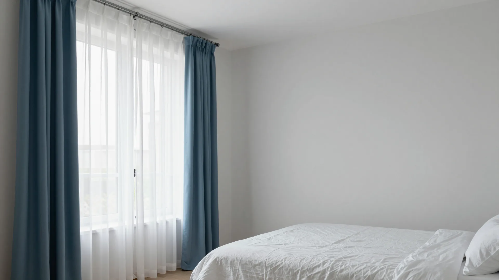
Doble cortinado
Tela y blackout textil en la misma ventana: oscurece y decora a la vez.
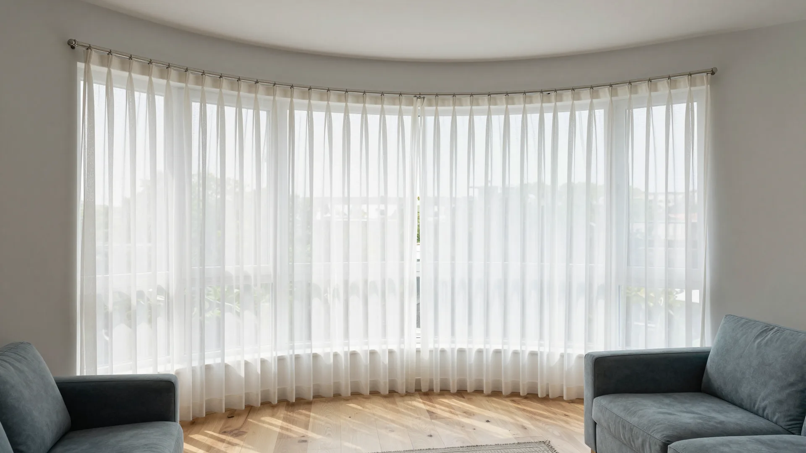
Rieles y barrales, rectos o curvos
El riel o el barral sigue la forma del ventanal, y la cortina corre de punta a punta.
Motorización: riel eléctrico con control remoto o tecla de pared.
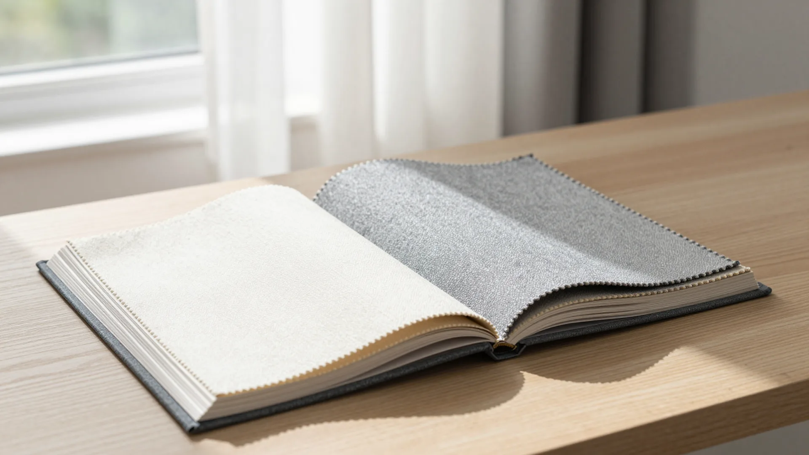
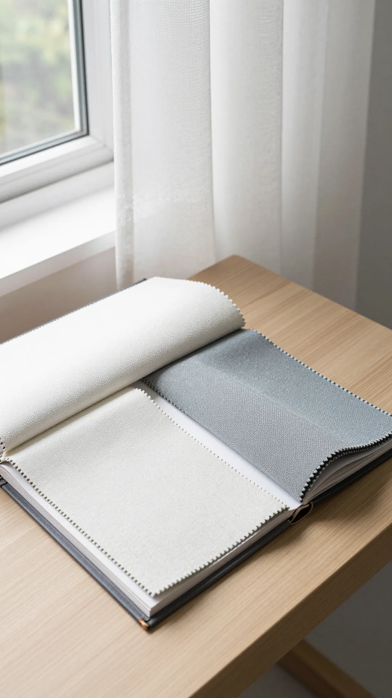
El muestrario va a tu casa.
Las telas se eligen con la luz de tu ambiente, no con la de un local. Llevamos el muestrario, medimos y te asesoramos ahí mismo.
- visita y presupuesto
- Sin cargo
- años en el rubro
- 40+
- donde trabajamos
- CABA y Provincia
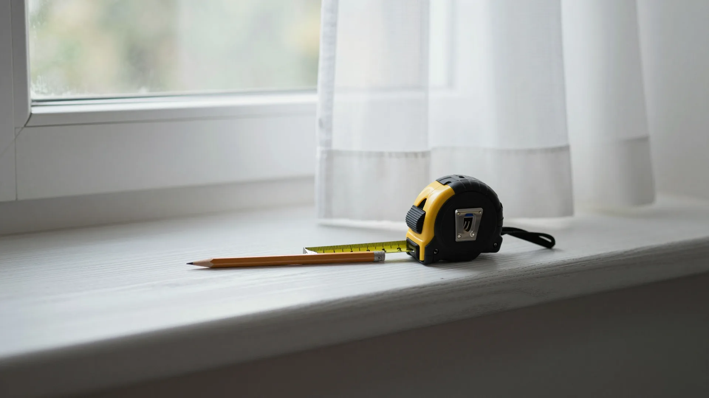
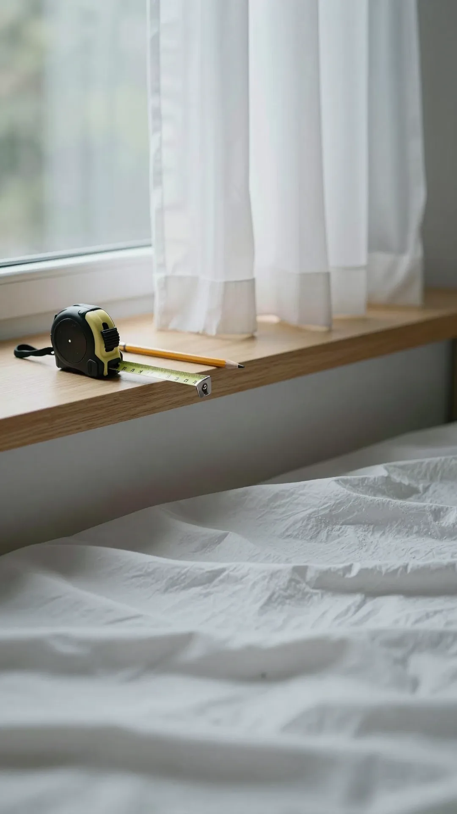
Cómo trabajamos
-
01
Consulta
Nos contás qué ambientes querés vestir.
-
02
Visita con muestrario
Telas, colores, rieles y terminaciones, a la luz de tu casa.
-
03
Presupuesto
Por escrito, ambiente por ambiente.
-
04
Instalación
La hace el mismo equipo, que te sigue acompañando después de la entrega.
Trabajos
Entendemos el trabajo bien logrado y el valor de los detalles.
-
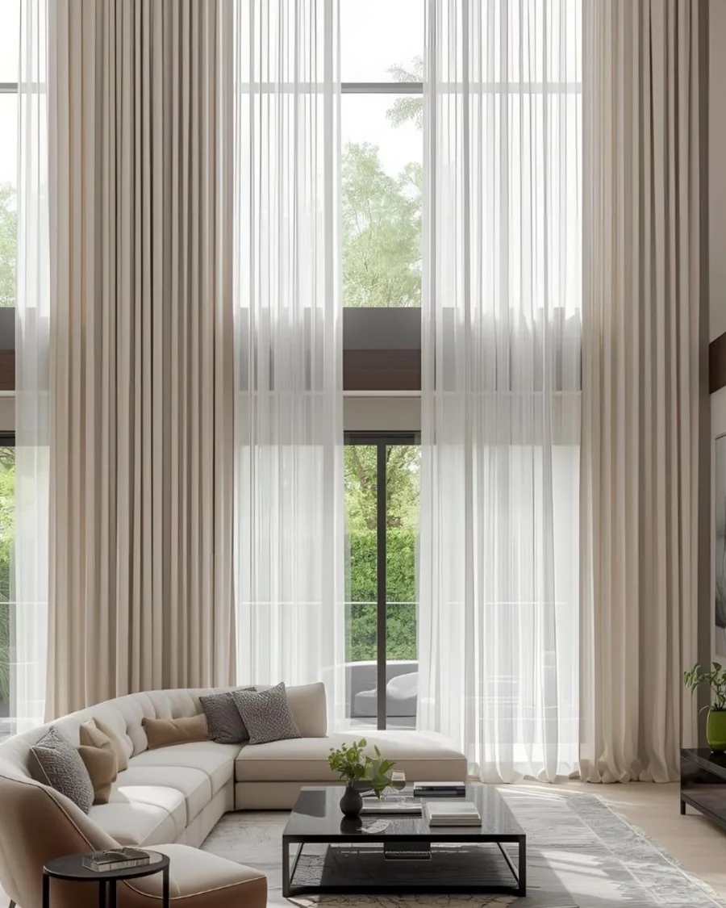
Cortinas de gasa de piso a techo en un living de doble altura
-
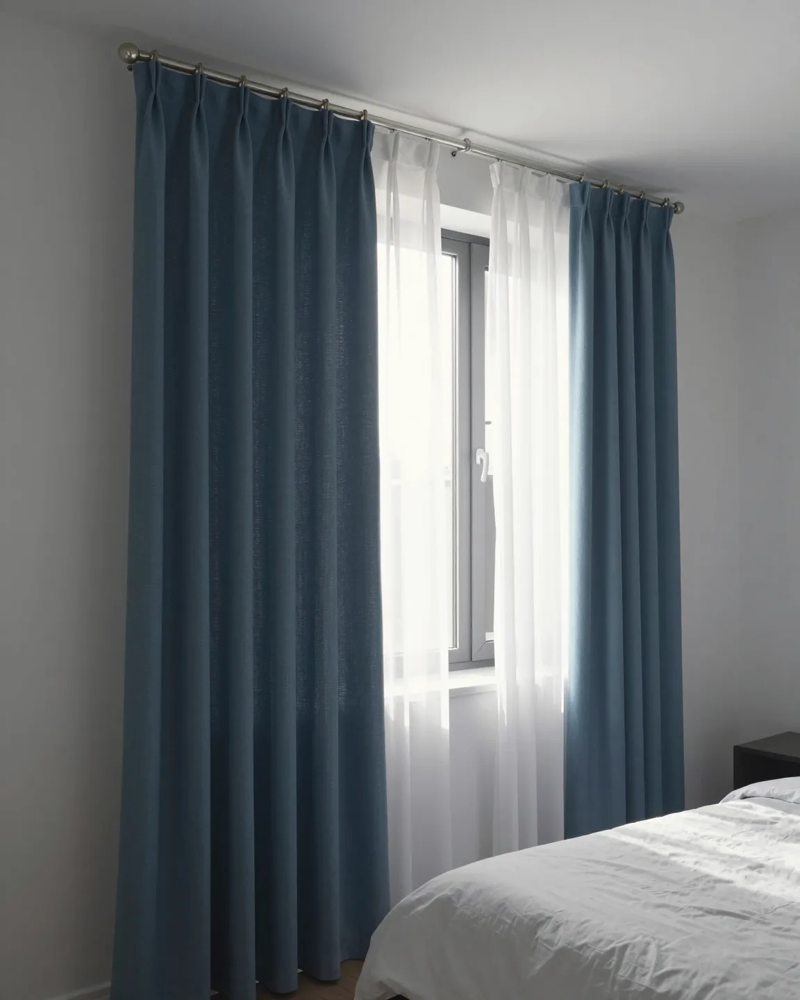
Doble cortinado de tela y blackout en un dormitorio
-
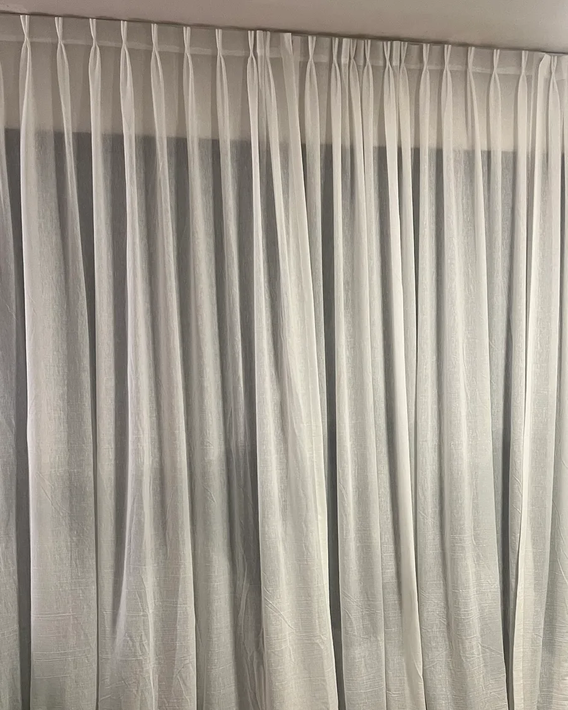
Cortinas plisadas blancas a lo largo de un ventanal
-
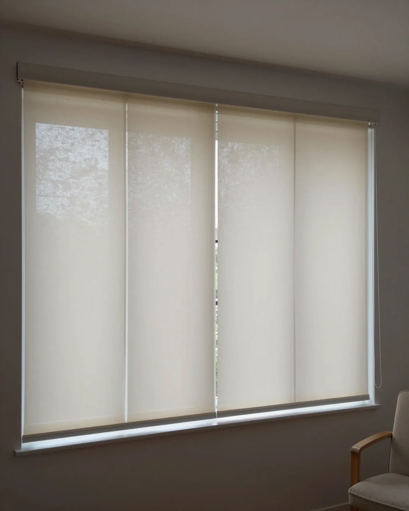
Paneles orientales en un ventanal de living
Antes de consultar
¿Cuánto cuesta?
Depende de la medida, la tela, el sistema y la instalación. Te pasamos un precio cerrado después de la visita.
¿Puedo combinar tela y blackout?
Sí: es el doble cortinado, una tela decorativa y un blackout textil en la misma ventana, en un riel o barral doble.
¿Tienen rieles para ventanales curvos o en ángulo?
Sí: rieles y barrales curvos, a la medida de tu ventanal. Los vemos en la visita.
¿Se puede motorizar?
Sí, con riel eléctrico y control remoto o tecla de pared.
¿Qué pasa después de instalar?
Seguimos acompañándote después de la entrega, para asegurarnos de que todo funcione y se vea como esperabas.
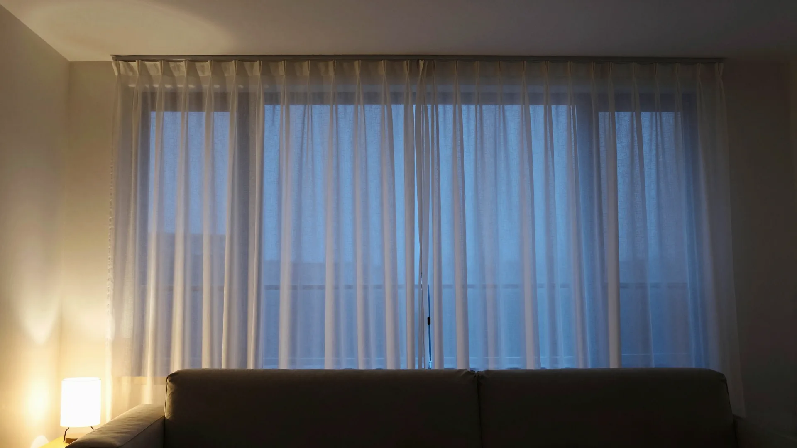
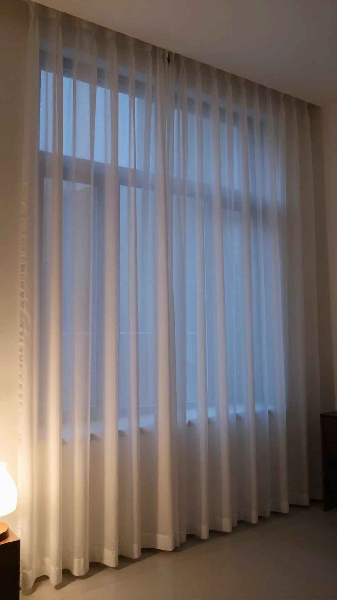
Cortinados para vos
Más de 40 años
Empezá por la tela.
Coordinamos una visita con el muestrario. Visita y presupuesto, sin cargo.